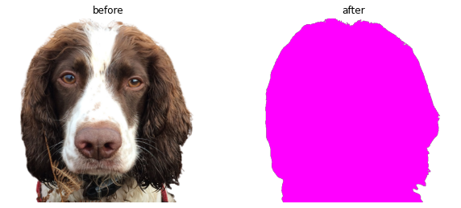

dir_img = Path("images").absolute()
if (dir_img / "mole.png").exists():
(dir_img / "mole.png").unlink()
fmter(dir_img / "mole.jpg", "png")
test_eq((dir_img / "mole.png").exists(), True)imgtk
Tools to manipulate images
fmter
fmter (src:Union[str,pathlib.Path], fmt:str='png')
Convert image format
| Type | Default | Details | |
|---|---|---|---|
| src | Union | source image path # fmt: skip | |
| fmt | str | png | target image format # fmt: skip |
| Returns | None |
Test file is created by fmter
Test saved image has the same size as the original one
test_eq(imread(dir_img / "mole.jpg").shape, imread(dir_img / "mole.png").shape)recolor
recolor (src:str, trg:str, color:tuple[int,int,int])
Recolor image except pixels with alpha=0
| Type | Details | |
|---|---|---|
| src | str | source image path |
| trg | str | target image path |
| color | tuple | color to recolor to |
| Returns | None |
recolor sets color of non-blank image pixels to a single rgb value.
recolor(dir_img / "mole-no-background.png", dir_img / "mole-pink.png", (255, 0, 255))
imgs = [Image.open(dir_img / f) for f in ["mole-no-background.png", "mole-pink.png"]]
_, axs = plt.subplots(1, 2, figsize=(10, 18))
axs = axs.flatten()
for img, ax, title in zip(imgs, axs, ["before", "after"]):
ax.imshow(img)
ax.axis("off")
ax.set_title(title)
plt.show()
Test file is created by recolor
rgb = (0, 0, 255)
blue_png = dir_img / "mole-blue.png"
if blue_png.exists():
blue_png.unlink()
recolor(dir_img / "mole-no-background.png", blue_png, rgb)
test_eq(blue_png.exists(), True)Test rgb is equal to the most common pixel color in the target image.
img = Image.open(blue_png)
pixels = [img.getpixel((i, j)) for i, j in product(*map(range, img.size))]
pixel = pd.Series(pixels).value_counts().index[0][:3]
test_eq(pixel, (0, 0, 255))pixel_color
pixel_color (fmt:str='rgb')
Add the color of current mouse cursor position to the clipboard.
| Type | Default | Details | |
|---|---|---|---|
| fmt | str | rgb | format of retured color (rgb or hex) # fmt: skip |
| Returns | None |
pixel_color() will copy the color of the current mouse cursor position to the clipboard.
# pixel_color()
# pyperclip.paste()'(24, 24, 24)'The color can be returned in either rgb or hex format.
# pixel_color('hex')
# pyperclip.paste()'#181818'test_eq(rgb2hex(*(24, 24, 24)), "#181818")
# test_fail(lambda: pixel_color('wav'))main
main ()